library(readr)
life_expec <- read_csv("datasets/life_expec.csv")Multiple Line Graphs
Creating Multiple Line Graphs
Visualizing Data for Multiple Populations
In the previous discussion, we have look on the general trend of life expectancy changes
Now, we want to look into details on the life expectancy changes
This will help to answer questions like whether there are differences in life expectancy between men and women or for Americans of different races.
Manipulating Data for Visualization
Due to a combination of biological and social factors, the life expectancy for men is often somewhat lower than it is for women.
Let’s use the life_expec data to explore how life expectancies for men and women have changed over the past 100 years in the United States.
As we explore differences in life expectancy by sex, you will need to select a subset of the life_expec data that contains observations for the populations of U.S. men and women.
Task
- Create a new data frame, life_expec_sex, containing only rows for which the Sex variable has the value “Female” or “Male” and the Race variable has the value “All Races.”
Solution
library(dplyr)
life_expec_sex <- life_expec %>%
filter( Race == "All Races" & Sex != "Both Sexes" )
head(life_expec_sex,5)# A tibble: 5 × 5
Year Race Sex Avg_Life_Expec Age_Adj_Death_Rate
<dbl> <chr> <chr> <dbl> <dbl>
1 2015 All Races Female NA 624.
2 2014 All Races Female 81.3 617.
3 2013 All Races Female 81.2 624.
4 2012 All Races Female 81.2 625.
5 2011 All Races Female 81.1 632.Graphing Life Expectancies for Men and Women: Multiple Panels
The new life_expec_sex data frame you created contains life expectancy data for men and women.
One way to compare the changes over time for the life expectancies of the two populations is to create a separate line graph for each.
If you create a line graph of the data using code similar to what you wrote in the previous mission
library(ggplot2)
plot1 <- ggplot(data = life_expec_sex) +
aes(x = Year, y = Avg_Life_Expec) +
geom_line()Plot Display
plot1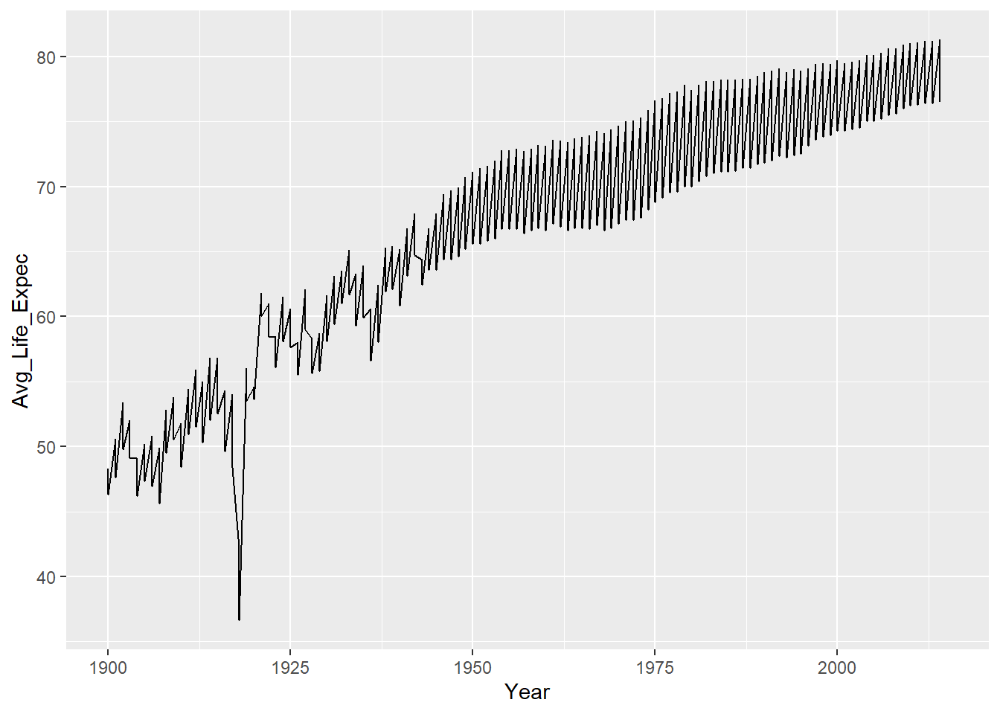
Explanations
The graph generated has two observations for each year: One for men and one for women.
All observations are connected by a line, making the line graph appear to depict year-to-year fluctuations in life expectancy instead of data for two separate populations:
One way to improve the clarity of this line graph is to plot life expectancy data for men and women on different axes using multiple graph panels
You can create line graphs on multiple, adjacent panels from the same data set by adding a new layer to your graph:
facet_wrap().The
facet_wrap()function splits data into subplots based on values of a variable in your data set.
Code : Facetting
plot2 <- ggplot( data = life_expec_sex) +
aes(x = Year, y = Avg_Life_Expec) +
geom_line()+
facet_wrap(~Sex)Plot Display
plot2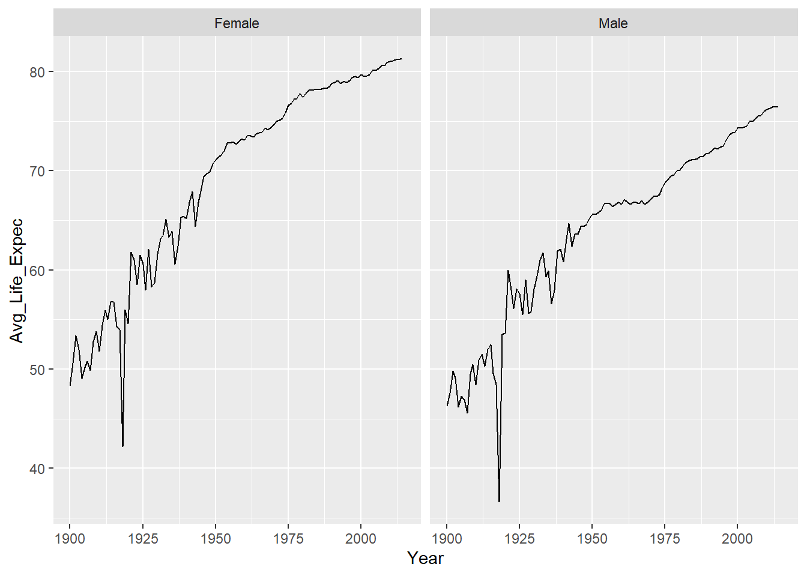
Explanations
By default, adding a layer to your graph using
facet_wrap(~Variable)creates two panels side by side, as shown in the graph previously.You can specify alternative arrangements of the panels using the arguments
ncol =ornrow =withinfacet_wrap().The ncol and nrow arguments allow you to specify the number of rows or columns of panels in your visualization. If you wrote the following code:
# ggplot(data = life_expec_sex) +
# aes(x = Year, y = Avg_Life_Expec) +
# geom_line() +
# facet_wrap(~Sex, ncol = 2)nrow and ncol in facetting
The resulting graph would be identical to the one above, since the panels will be arranged in two columns.
However, you could create a graph with panels stacked one on top of the other by specifying either ncol = 1 or nrow = 2.
Task
Let’s visualize U.S. women’s and men’s life expectancies on separate panels so you can compare how they have changed over time.
- Use the life_expec_sex data frame to create line graphs of men’s and women’s life expectancies over time.
Solution
plot3 <- ggplot( data = life_expec_sex) +
aes( x = Year , y = Avg_Life_Expec) +
geom_line()+
facet_wrap(~Sex, nrow = 2)Plot Display
plot3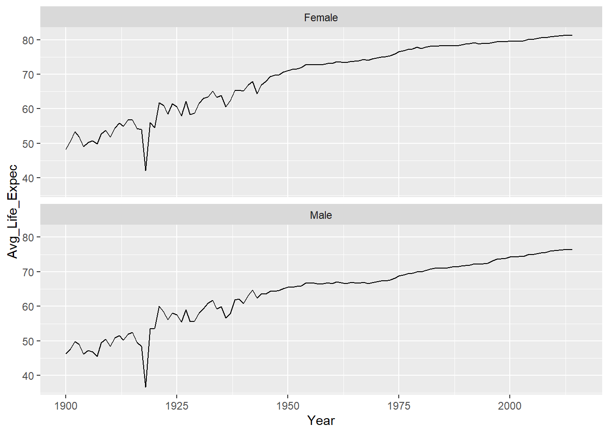
Graphing Life expectancies of Men and Women on the Same Axes
From previous plot , it’s clear that women’s and men’s life expectancies have followed some similar patterns over the past century.
For example, both display a sharp dip around the time of the 1918 flu pandemic.
It’s still difficult to understand whether there are differences in men’s and women’s life expectancies though.
This visualization can be improved by plotting men’s and women’s life expectancy over time on the same axis instead of on two separate ones.
Plotting on The Same Axes
Instead of adding a layer to the graph to create two separate panels, you can specify that you want to plot multiple lines within the
aes()layerSo far we have only introduced the axis arguments that can be used to define x and y variables on a two-dimensionl graph, the
aes()layer can also be used to map additional variables to your graph using aesthetic properties like color, shape, and size.For example, you can plot men’s and women’s life expectancies on the same set of axes and differentiate them by using different styles of lines:
The Code
- To create a line graph with different values of the Sex variable shown using different styles of lines, you’d use the syntax lty = Sex. The argument lty stands for “line type”:
plot4 <- ggplot(data = life_expec_sex) +
aes(x = Year, y = Avg_Life_Expec, lty = Sex) +
geom_line()Plot Display
plot4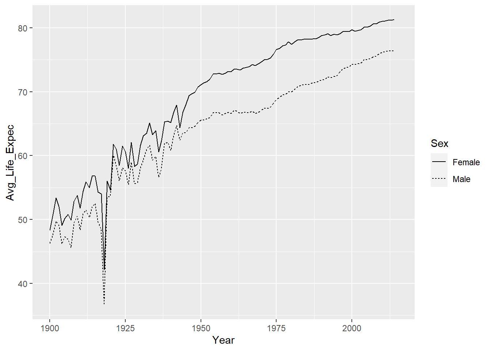
Using color to differentiate
Color can also be used distinguish between males and females
Done by setting a color value in col aesthetic
As in the previous chart ggplotw will create an auto legend to show what each color represents
Task
- Create a line graph with the change in men’s and women’s life expectancies over time represented by lines of different colors.
plot5 <- ggplot(data = life_expec_sex) +
aes( x = Year , y= Avg_Life_Expec, color = Sex) +
geom_line()Output
plot5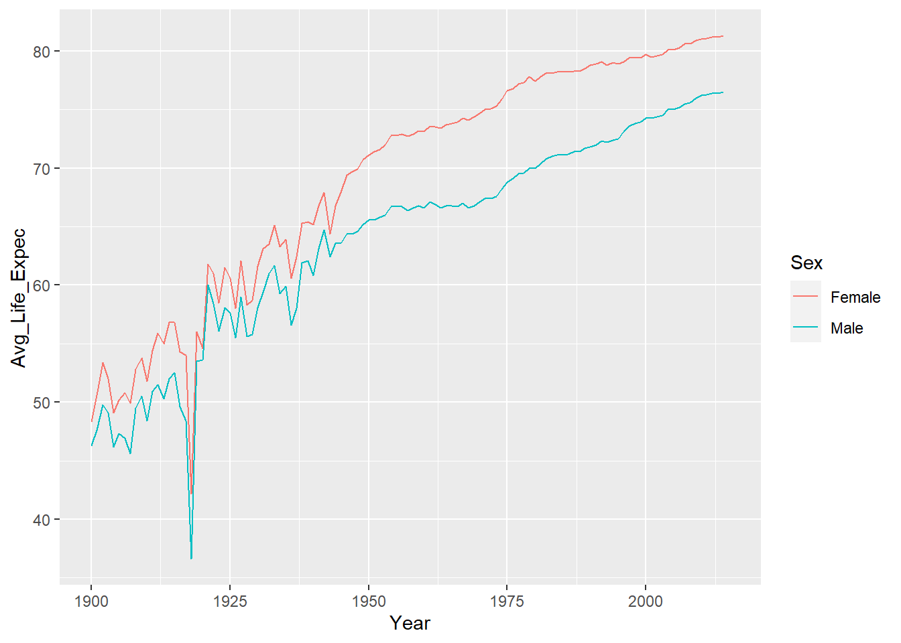
Explanations
Although life expectancies for U.S. men and women followed similar patterns over the past 100 years, in general, women have tended to live longer.
Relatively recently, since about 1950, life expectancies for men and women have steadily and gradually increased.
Before 1950, though, life expectancies appear to have fluctuated quite a bit from year to year. Why might this be?
Graphing Subset of Data
When you want to hone in on an interesting subset of your data for further investigation, one way to do so is to set scale limits.
Changing the scale limits changes the range of your axes so you can display only a portion of your data.
For example, let’s say you wanted to create a graph displaying only the 1918 dip in life expectancy due to influenza.
plot6 <- ggplot(life_expec_sex) +
aes(x = Year, y = Avg_Life_Expec, color = Sex) +
geom_line() +
xlim(1915, 1920) +
ylim(35, 60)Output
plot6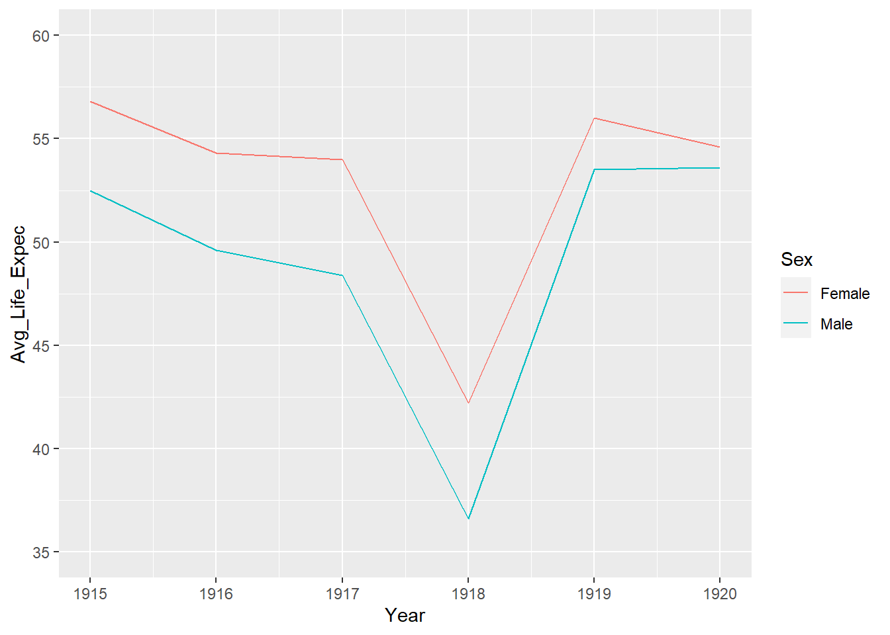
Using limits
In the previous graph, the x-axis years range from 1915 to 1920, and the y-axis life expectancies range from 35 to 60 years old.
We have zoomed in on this portion of the graph by changing the scale limits.
By default, when you use
ggplot()to greate a graph, all observations will be included.Adding
xlim()andylim()layers to the graph allows you to specify ranges to display only a subset of the data.Looking at the graph of life expectancies for the years 1915 to 1920 allows you to clearly visualize the devastating effect that the flu pandemic had on life expectancies.
Task
Earlier, we discussed the interesting differences in life expectancy fluctuations before and after 1950.
Let’s create a graph focused on life expectancy data from before 1950.
Add a new layer to the line graph of men’s and women’s life expectancies to hone in on the years between 1900 and 1950.
Solution
plot7<- ggplot( data = life_expec_sex) +
aes( x = Year , y = Avg_Life_Expec, color = Sex ) +
geom_line() +
xlim(1900, 1950) +
ylim(35, 80) +
labs(title = "Life Expectancies of US Males and Female 1900 - 1950",
y = "Average Life Expectacy (Years)")Plot Display
plot7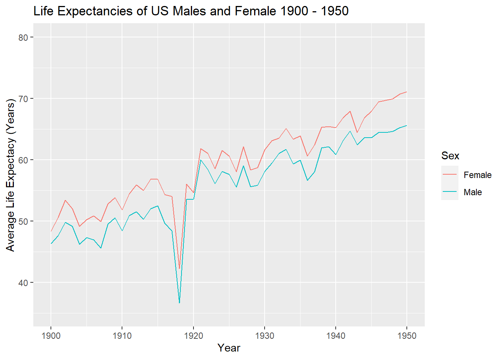
Exploring the data further
The differences in life expectancy between white and black americans
To do this, you will need to use a different subset of data from the life_expec data frame:
1. Values of Sex that are either "Male" or "Female" 2. Values of Race that are either "Black" or "White"Put another way, you will want to exclude averaged data:
- Values of Sex that are “Both Sexes”
- Values of Race that are “All Races”
Task
- Create a new data frame, life_expec_sex_race, that contains values of Sex that are either “Male” or “Female” and values of Race that are either “Black” or “White.”
Solution
life_expec_sex_race <- life_expec %>%
filter((Sex == "Female" | Sex == "Male") &
(Race == "Black" | Race == "White"))Notice there are four observations for each year: Black women, black men, white women, and white men. This means you have four lines to plot.
What is the best way to present line graphs of these data?
One method is to plot four lines on a single set of axes.
Creating The Plot
To create a line graph with a line for each combination of Sex and Race variable values, you can specify multiple aesthetic parameters within the
aes()layerFor example, to create a graph in which lines representing life expectancies are
Different colors for populations of different sexes
Different line styles for populations of different race
plot8 <- ggplot(life_expec_sex_race) +
aes(x = Year, y = Avg_Life_Expec, color = Sex, lty = Race) +
geom_line()Display Plot
plot8 +
theme_minimal()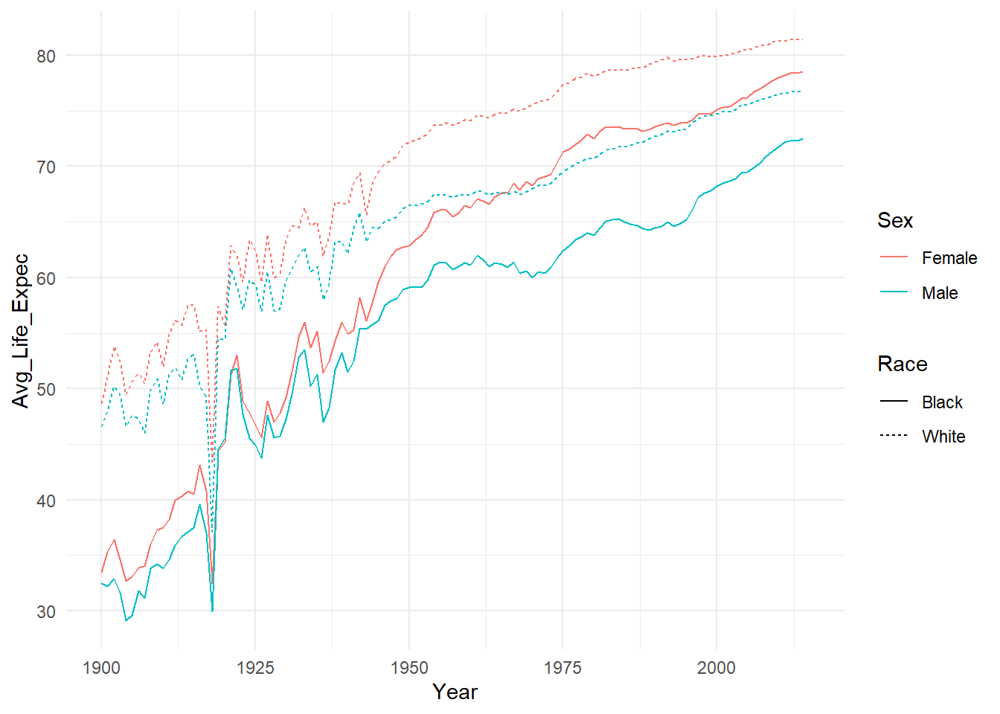
Custom colors
As you’ve now seen is often the case with creating graphs with ggplot2, modifying line colors and types involves adding another layer to your graph.
To change the two colors you used in the graph above to represent men and women, you’d add a layer called
scale_color_manual().Let’s change the colors representing men’s and women’s life expectancies to “magenta” and “orange”
plot10 <- ggplot(life_expec_sex_race) +
aes(x = Year, y = Avg_Life_Expec, color = Sex, lty = Race) +
geom_line() +
scale_color_manual(values = c("magenta", "orange")) +
theme_minimal() Display plot
plot10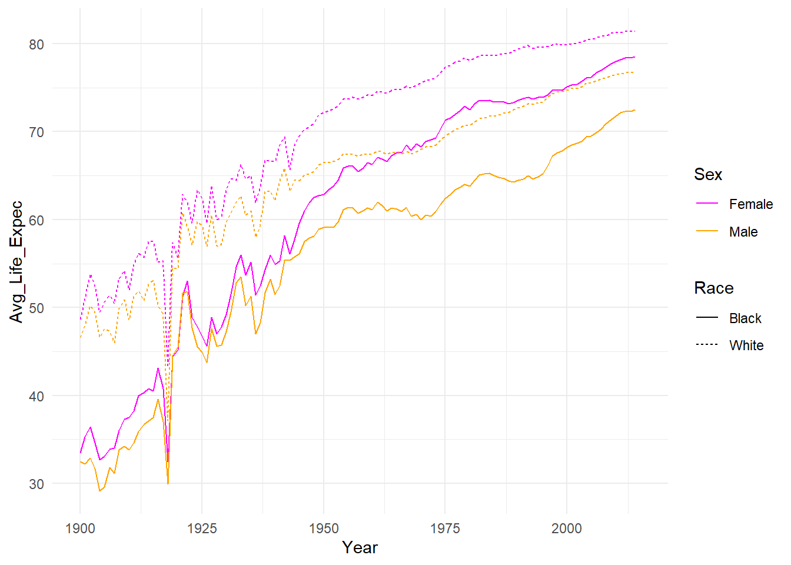
Custom Lines
- To change the line types representing black and white Americans’ life expectancies, you’ll need to add another layer:
scale_linetype_manual(). - To change the line types in the graph to “longdash” and “dotdash”, you would write
plot11 <- ggplot(life_expec_sex_race) +
aes(x = Year, y = Avg_Life_Expec, color = Sex, lty = Race) +
geom_line() +
scale_color_manual(values = c("magenta", "orange")) +
scale_linetype_manual(values = c("longdash", "dotdash")) +
theme_minimal()Display Plot
plot11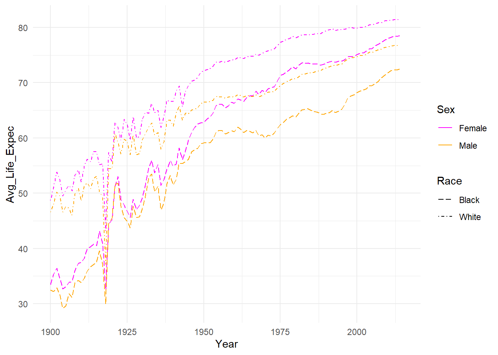
Task
Using the life_expec_sex_race data frame, create a line graph to investigate differences in how life expectancies of the following populations of Americans changed between 1900 and 2014: Black women, Black men, White women, White men
Differentiate between the two sexes using the following colors:
values=c("darkgreen", "darkorchid"))Differentiate between the two races using the following line types:
values = c(1,4))
plot12 <- ggplot(life_expec_sex_race) +
aes(x = Year, y = Avg_Life_Expec, color = Sex, lty = Race) +
geom_line() +
scale_color_manual(values = c("darkgreen", "darkorchid")) +
scale_linetype_manual(values = c(1,4)) +
theme_minimal()Display Plot
plot12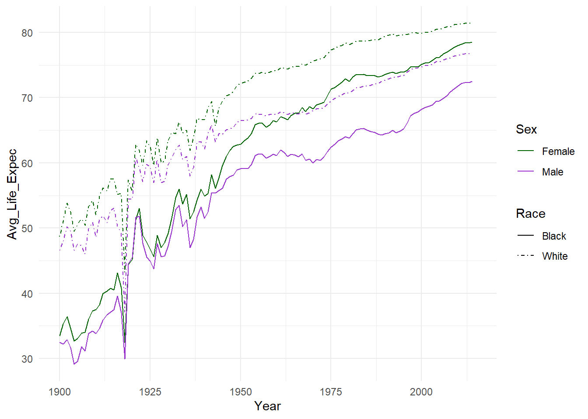
Stories from the plot
Breaking the data down further into populations of black and white Americans reveals that, within each population, the pattern of women living longer than men holds true.
However, it’s clear from the graph that in general, white women live longer than black women, and white men live longer than black men.
This pattern is likely due to socioeconomic inequality in the U.S., which negatively impacts the lives of black Americans.
It is also interesting to note that while life expectancies for white women and men have generally not fluctuated much since about 1950
Life expectancies for black women and men continue to fluctuate from year to year.
Another way to Present - Fascets
plot13 <- ggplot(life_expec_sex_race) +
aes(x = Year, y = Avg_Life_Expec, color = Sex) +
geom_line() +
facet_wrap(~Race, ncol = 2)Display Plot
plot13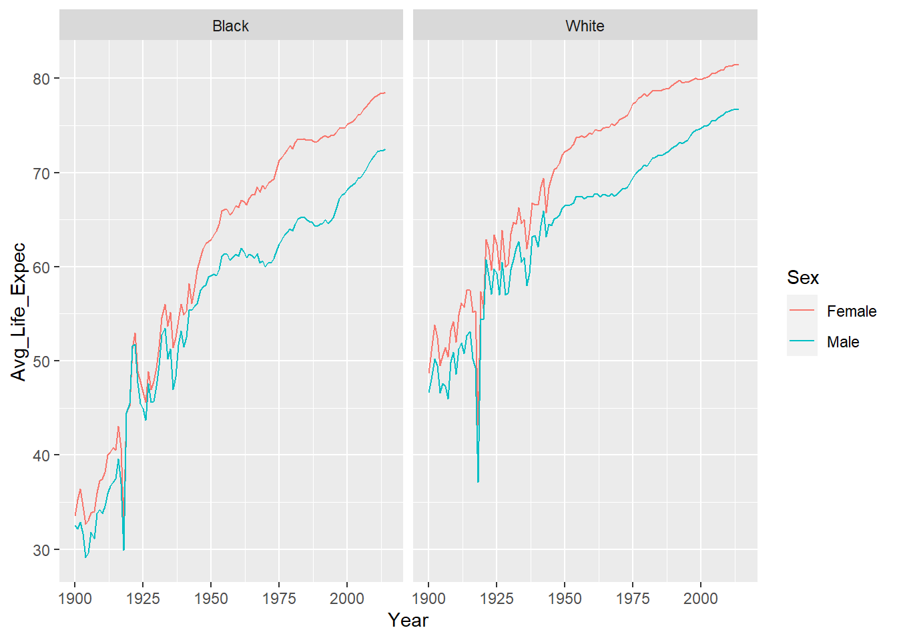
Final Challenge
Create a line graph to visualize changes in the life expectancies of the following U.S. populations between 1900 and 2014: Black women Black men White women White men
Use the following line types:
values = c(1,4))Design your graph so that it has a white background.
Give your graph the title: “United States Life Expectancy: 100 Years of Change.”
Give the y-axis the title: “Average Life Expectancy (Years)
Solution
plot14 <- ggplot(data = life_expec_sex_race) +
aes(x = Year, y = Avg_Life_Expec, lty = Race) +
geom_line() +
scale_linetype_manual(values = c(1,4)) +
facet_wrap(~Sex, ncol = 2) +
labs(title = "United States Life Expectancy: 100 Years of Change",
y = "Average Life Expectancy (Years)") +
theme(panel.background = element_rect(fill = "white"))Plot Display
plot14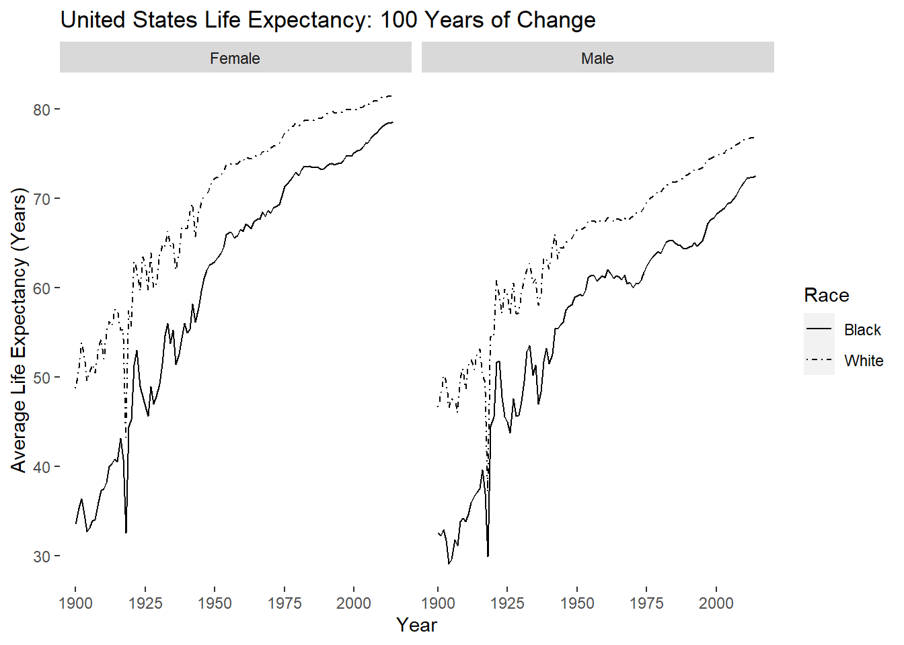
Comments
This visualization can allow you to take a closer look at the year-to-year variability in life expectancy during the first half of the twentieth century.
What do you think could be some potential causes? Perhaps a greater impact of infectious diseases prior to medical advances such as vaccines for polio, measles, and influenza?
This could be an interesting topic to study, and demonstrates some of the types of questions that arise when you visualize data graphically instead of looking at it in tabular form.